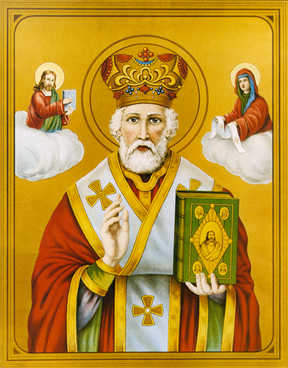

Legends of Kidnapped Children – Part 2
Getro and
Eufrosine
The purity and simplicity of
the following story of a kidnapped boy make it one of the most appealing of the
St. Nicholas legends. In the twelfth and thirteenth centuries, the story became
a popular miracle play. In fact, plays about St. Nicholas represent the oldest
category of medieval miracle plays! On the basis of contemporary accounts,
Nicholas in these plays was not only presented with appropriately awe-inspiring
personality traits, but also with a slight touch of humor.
Getro and Eufrosine have long desired a son. Getro
makes a pilgrimage to Myra to pray for a child. The prayer is granted. The son
is born on December 6th, and in their gratitude they name him Dieudonné (that is, “God given”). While a small child,
he is stolen and sold to the “Emperor of the Saracens” whom he serves in the
capacity of cupbearer. On one celebration of the Feast of St. Nicholas,
Dieudonné remembers the Saint. At the
same time, Getro is praying in the church, when suddenly, Dieudonné is restored to him.
In the fifteenth-century play, “Moralité de monsieur Sant Nicholas a XII personages,”
Simon le Borgoys and his wife, Simone, prepare to celebrate the Feast of St.
Nicholas. Their son, Dieudonné, or merely l’Anfant, has been born through the
intercession of the Saint, and the boy recites the merits of his patron. Taking
a last look at the church to see that all is in readiness, the boy is surprised
by three swaggering Saracens, Talebot, Elucides, and Facetout. They carry him
off to the sultan of an unnamed country. The two parents are desolate, but it
is to be noted that the father indulges in the longest lament.
At the sultan’s court, Dieudonné is tortured for refusing to renounce his
religion and calls upon St. Nicholas for aid, at the same moment that his
distant parents are praying for the same purpose. Thereupon St. Nicholas calls
upon God, Who promises His help and promptly dispatches the archangels Raphael
and Uriel to transport the boy to his parents. After a happy reunion, the
messenger reappears to emphasize the moral of the piece, and there ensues a
diablerie, in which Beelzebub, Lucifer and Satan conspire to wreak harm on the
young Dieudonné. This is obviously intended
as an interlude in the play before the arrival of the villains.
Adeodatus
As knowledge of Nicholas made its way to the
European West, the legend underwent a number of variations in the retelling and
rewriting, but its essence remained unchanged. For example, John Diaconus
speaks of a pilgrim to Myra, who arrives at his destination just as Nicholas is
to be buried. The pilgrim, Cethron, husband of Euprosina of Exoranda, hopes to
obtain Nicholas’ blessings toward the conception and birth of a son.
While in Myra, Cethron is able to obtain one of
Nicholas’ relics. He takes it back to Exoranda, hoping that his prayers will be
answered by the Saint’s miraculous powers, even after his bodily death.
On the urging of his wife, he builds a chapel
dedicated to St. Nicholas just outside of town. The church is dedicated by the
local bishop, Apollonius. The relic, noted for its delicate scent, shows
miraculous qualities. Soon after they come into possession of this relic,
Euprosina learns that she’s pregnant. When their son is born on the Feast of
St. Nicholas, they name him Adeodatus (that is, “God given”).
When Adeodatus is seven years old, and while
everyone’s preparing for the Feast of St. Nicholas, the town is invaded by
Agareni and his Arab troops. Many inhabitants are kidnapped, to be taken into
slavery, and transported to Babylon. Among them is the young boy. When the
prisoners are divided among the leading Arab families, Adeodatus is taken on as
cupbearer in the palace of King Marmorinus.
One year later, when the Feast of St. Nicholas comes
around once more, a startling event takes place. Adeodatus has served the king
well, and the royal ruler has just told the boy that no force in the world will
ever separate them. At that moment, as the young cupbearer fills a goblet with
wine and is handing it to King Marmorinus, the boy and cup disappear into the
air. They rematerialize in the youngster’s hometown, in the midst of his
family. The rest of the story corresponds to the earlier Eastern version.
The three versions of this story illustrate, once
again, the multiple link between St. Nicholas and young children. In legends
concerning the kidnapping, Nicholas is obviously the protector and rescuer of
an innocent child.
In another tribute to Nicholas, and for the
entertainment and education of the people, special plays were written and
performed as part of the celebration of the Feast of St. Nicholas. This is
evidenced by a character from a play based on the Deodatus legend, who says,
“tomorrow will be St. Nicholas day, whom all Christians should devoutly
cherish, venerate and bless, In crastino erit festivitas Nicholai.” The quote
is taken from a thirteenth-century manuscript that once belonged to the
Benedictine monastery of Fleury, France, and which now resides in the public
library in Orléans.
Thought to Ponder: Whether in this world or
the next, St. Nicholas – the most human of Saints – has always been ready to
help where needed, comforting, rescuing and loving his people.
The story of the kidnapped boy became a popular
miracle play in the twelfth and thirteenth centuries. Aside from its exotic
locale, pious orientation, and moral uplift, the play had striking
personalities and an attention-holding plot. It was adapted to various settings
and regions. In one version, the boy was depicted as of Norman [French] origin.
The three versions of this story illustrate, once
again, the multiple links between St. Nicholas and young children. In the
legends concerning the kidnapping, the Saint is obviously the protector and
rescuer of an innocent child. In the variation that gives him the name
Adeodatus, this is combined with St. Nicholas in the role of interceding for a
childless couple praying for a boy child. This fertility theme is the same as
in the legend of Nicholas’ own birth: a barren woman prays for a child, and her
prayers are answered, either directly by God or through saintly Intercession.
Legends of Kidnapped Children – Part 2
